Plans arrive as school newsletters, flyers, WhatsApp messages and sticky notes. Someone still has to type each one in, check it against everyone else’s week and remember the pickup. Runday hands that job to an assistant.
[ Project 06 / 10 ]UI/UX & Product DesignPortfolio 2026
AI Family Scheduling Assistant
“Your family’s week, finally organized.” Runday is a scheduling assistant for the person who keeps a household running.
You photograph a school newsletter or record a voice note. The AI turns it into events, flags clashes between family members and reminds everyone before they need to leave.
- Category
- Family organisation
- Audience
- Parents & household managers
- Platform
- Mobile app
- Model
- Free plan + Pro subscription
- Scope
- 17 screens, onboarding to paywall
- Role
- UI/UX Design

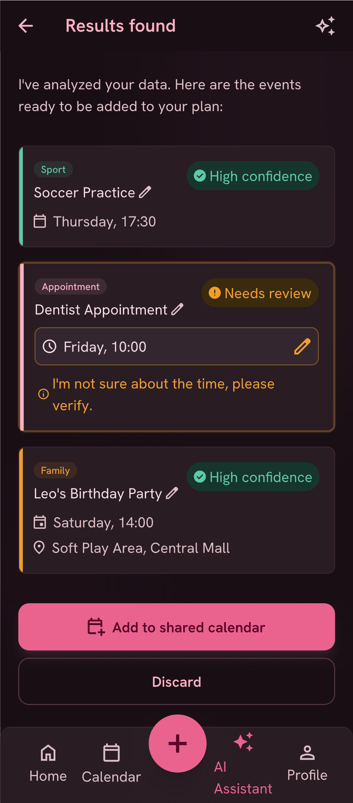
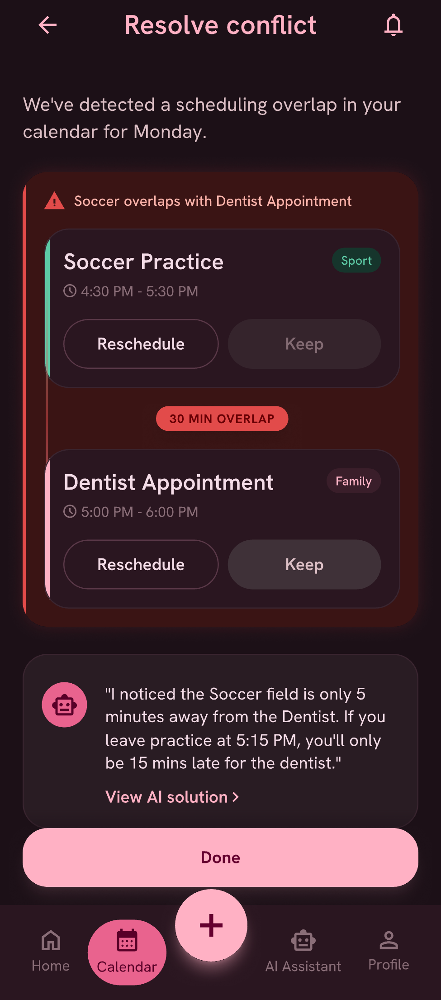
01Problem
Plans arrive as school newsletters, flyers, WhatsApp messages and sticky notes. Someone still has to type each one in, check it against everyone else’s week and remember the pickup.
02What I did
UI/UX design
Scope: 17 screens, onboarding to paywall
03Outcome
A school newsletter, a voice note and a dentist booking end up in one plan the whole family shares.
06.1Concept & challenge
A family’s plans arrive everywhere except the calendar
[ Audience ]
“The modern household manager”: usually a parent coordinating kids, a partner and sitters in one shared view.
[ Challenge ]
Make AI input feel trustworthy enough for a family’s real commitments, and make a dense shared schedule readable at a glance.
01
Just snap a photo
School newsletters, flyers and texts become calendar events, parsed by AI.
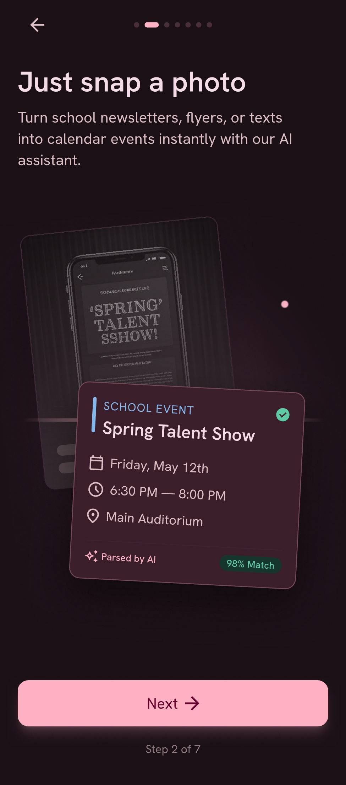
02
Everyone in sync
Kids, partners and sitters share one view, with no more double bookings.
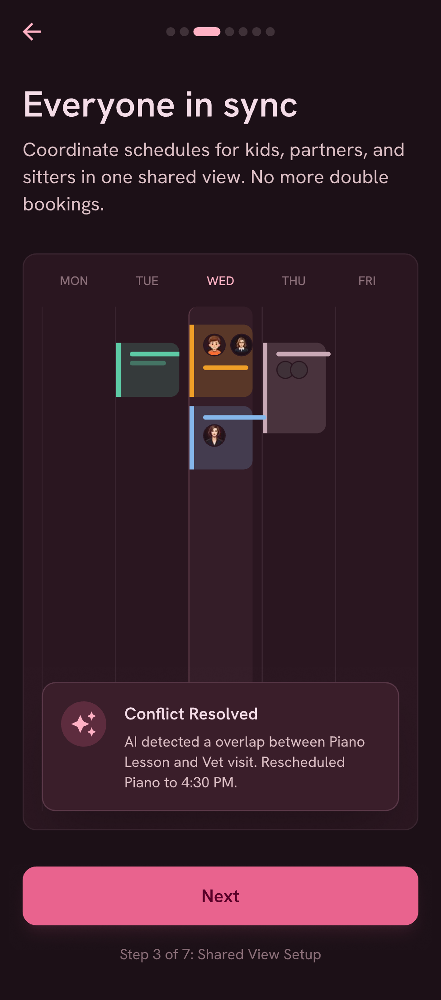
03
Never miss a pickup
A reminder 24 hours before each event keeps the whole family on time.
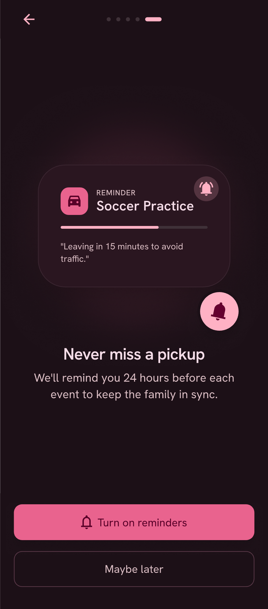
06.2 — Features & flow
From a screenshot to the shared calendar
The + button in the tab bar opens the core loop. Choose an input, let the AI read it, check what it found, then deal with any clash.
01 →Choose an input
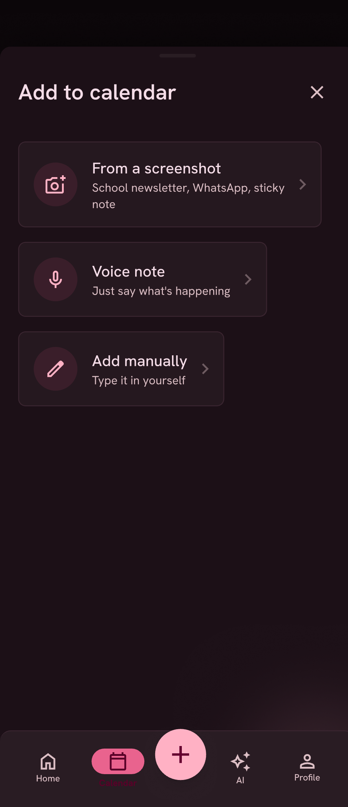
From a screenshot, a voice note, or added manually.
02 →Speak it
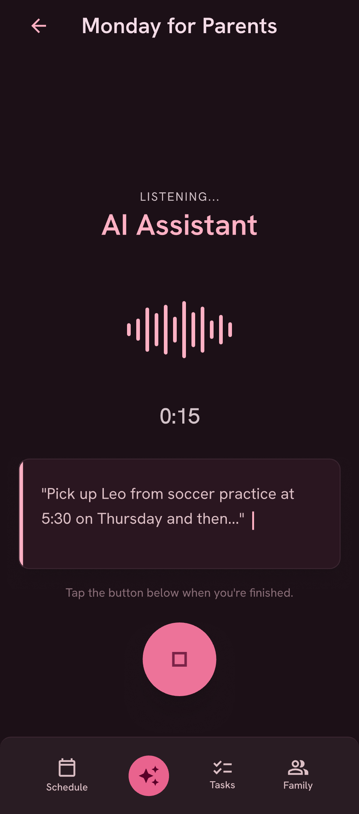
“Pick up Leo from soccer practice at 5:30 on Thursday…” The transcript appears live.
03 →AI reads it
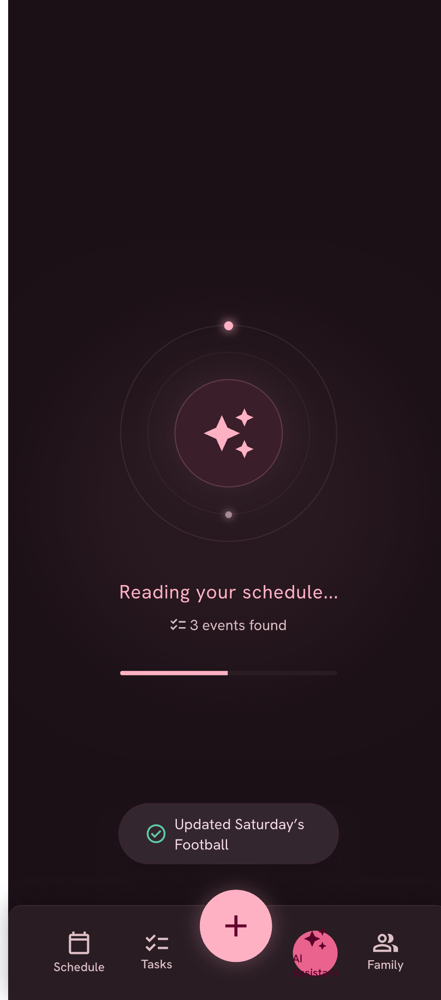
“Reading your schedule…” with a count of the events found so far.
04 →Review & confirm
Editable event cards, then “Add to shared calendar” or “Discard”.
05Resolve clashes
Overlaps are flagged, with Reschedule or Keep for each event.
[ Spotlight · Parse result ]
The AI says when it isn’t sure
Parsed events are never added silently. Each one comes back as a card the parent can edit, with a confidence label, before anything reaches the shared calendar.
High confidence
Shown on events the AI read clearly, like Soccer Practice on Thursday at 17:30.
Needs review
The card gets an amber outline, the time field is highlighted, and a note in plain words: “I’m not sure about the time, please verify.”
Category tags
Sport, Appointment and Family tags tell the events apart before you read the titles.
Edit in place
Every title has an edit icon, so you can fix a detail without starting over.
[ Spotlight · Conflict resolution ]
Overlaps come with a way out
When two events collide, the screen shows both side by side, marks the size of the overlap and offers a practical fix.
- 01The banner names the clash in plain words: “Soccer overlaps with Dentist Appointment”.
- 02Both events are stacked, with a “30 min overlap” marker between them and Reschedule or Keep on each.
- 03The AI suggests a fix based on location: leave practice at 5:15 PM and you’ll only be 15 minutes late for the dentist.
06.3Onboarding
Set up the household, then ask for access
Two feature screens come first. Setup then builds the family before asking for the calendar and notifications, so each permission request already has a reason.
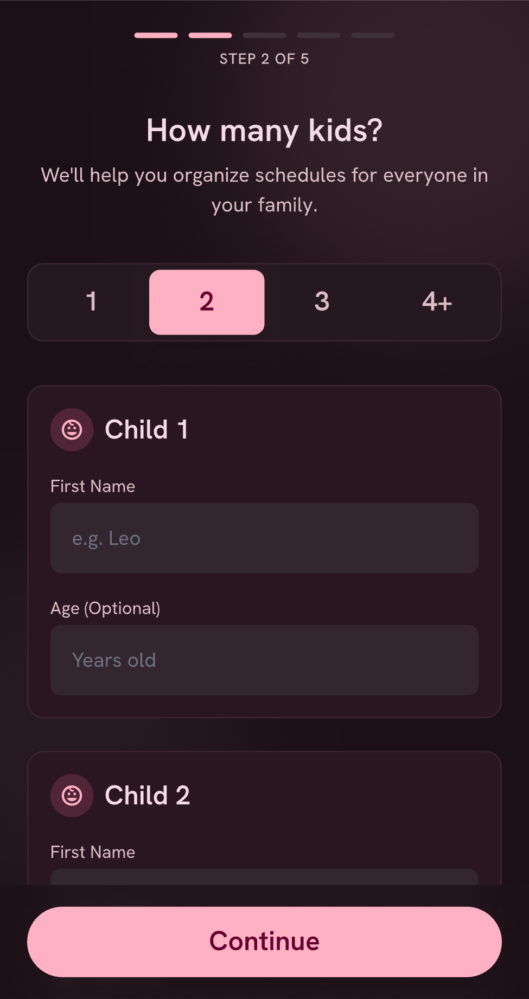
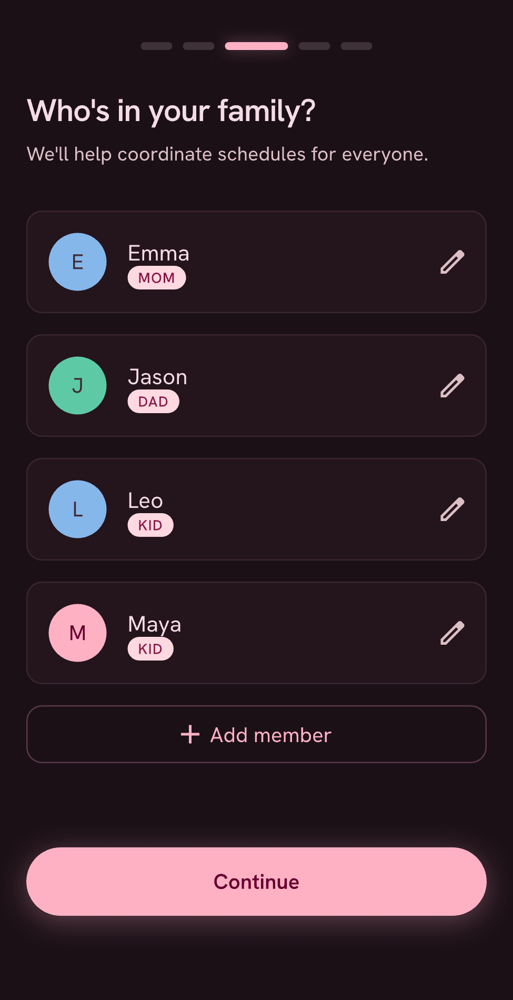
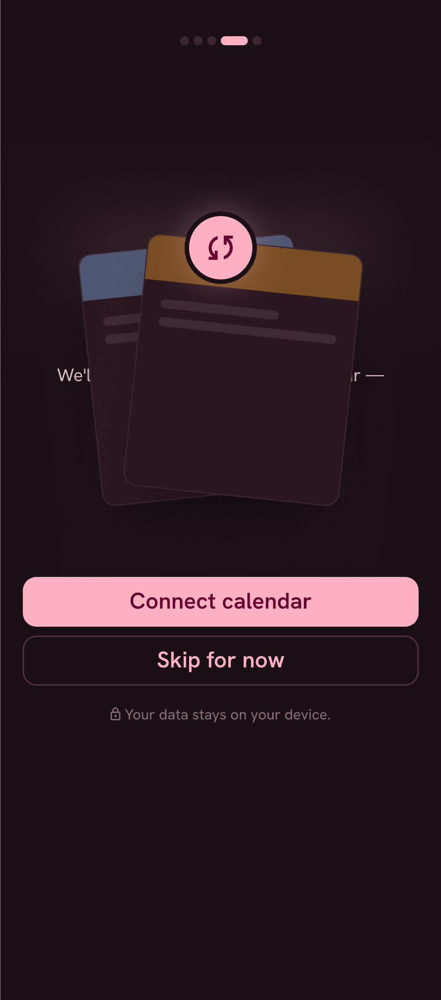
Kids quizOnly what’s needed
A number picker (1, 2, 3, 4+) creates one card per child. Only the first name is required; age is optional.
Add family membersRoles, not accounts
Each person gets an initial, a colour and a role tag (Mom, Dad, Kid), and those carry through the whole app.
Calendar importPrivacy up front
Apple and Google calendars connect in one tap, with “Your data stays on your device.” A “Skip for now” option is always visible.
NotificationsShow before asking
A sample Soccer Practice reminder previews the value before the permission prompt. “Maybe later” is offered as an equal choice.
06.4UX/UI design
Four tabs around one button
01HomeToday’s agenda, conflicts and the week summary
02CalendarMonth, week and day views, filtered by person
03+ AddScreenshot, voice note or manual entry
04AI AssistantParsing and the AI’s suggestions
05ProfileFamily, sync, notifications and plan
Home / Today · full scroll
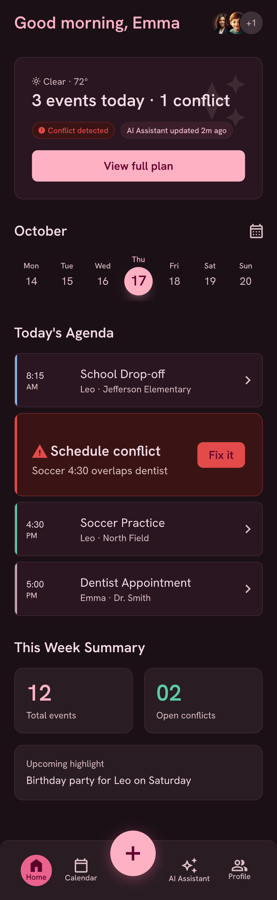
[ Home / Today ]
The day in one sentence
Home opens with a summary line, “3 events today · 1 conflict”, before the details. The conflict sits inside the agenda at the time it happens, with a “Fix it” button.
- 01Greeting with context
“Good morning, Emma”, plus the weather, so the day starts with what affects plans. - 02Week strip
A row of seven days with today highlighted in pink, just above the agenda. - 03Agenda with owners
Each event shows who it’s for and where: “Leo · North Field”, “Emma · Dr. Smith”. - 04This week summary
Total events and open conflicts, with the next highlight: Leo’s birthday party on Saturday.
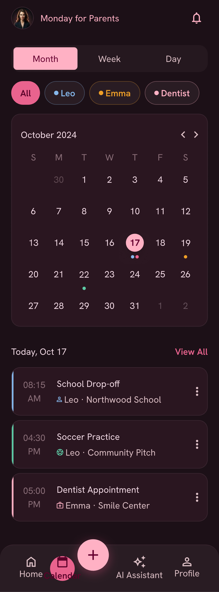
Month, week or day view, with person filters (All, Leo, Emma) and the selected day’s events listed below the grid.
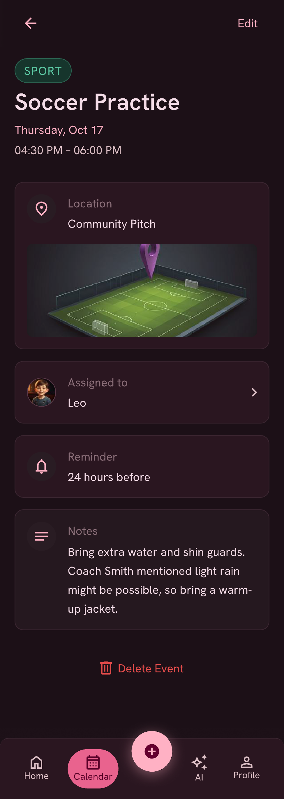
A category tag, time, a location map, who the event is assigned to, the reminder and free-text notes.
Add to calendar
A bottom sheet with three ways to add an event, each with a one-line hint about what it accepts.
[ Visual language ]
Dark plum, one pink
Pink is used for the primary action, today’s date and the active tab. Everything else stays in plum tones, so each screen has one clear next step. Status gets its own colour: green for high confidence, amber for needs review, red for conflicts.
PlumBackground
SurfaceCards
PinkPrimary action, today
GreenHigh confidence
AmberNeeds review
RedConflict
06.5 — Profile & plans
Free to start, Pro for the whole village
Profile groups family management, calendar sync, the daily briefing and the subscription. The free plan allows up to three family members. Pro removes the limits.
Unlimited AI parsing
Screenshot and voice parsing for every type of schedule.
Unlimited family members
“Connect the whole village.” The free plan is limited to three.
AI Morning Briefing
A personalised daily digest, sent every morning at 7 AM.
Annual · most popular$39 / year
Monthly · cancel anytime$4.99 / mo
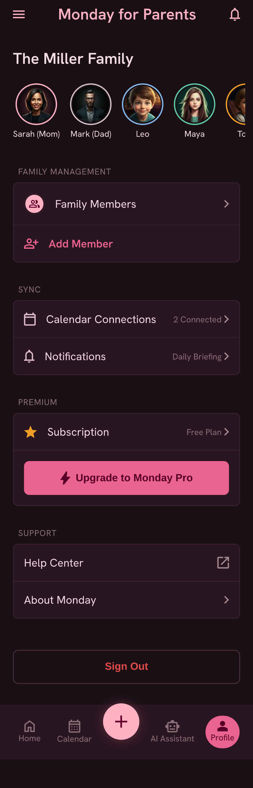
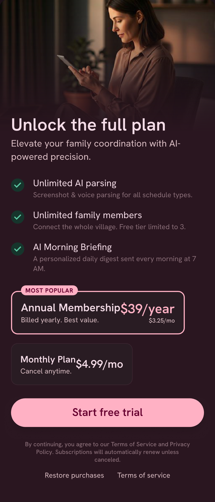
06.6Final product
Everyone in sync
A school newsletter, a voice note and a dentist booking end up in one plan the whole family shares.